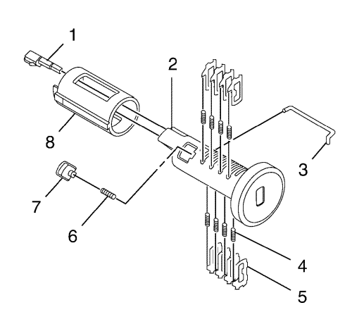
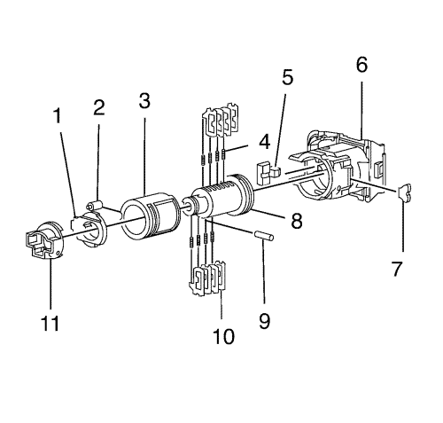

Codificación de la llave y el cilindro de cierre
Cilindro de la cerradura de encendido
El cilindro de la cerradura de encendido utiliza 8 posiciones de corte de llave, 1-8. Las posiciones de los tambores están escalonadas de lado a lado, cuatro en un lado y cuatro en otro.

Nota: Los tambores (5) no se sujetan por sí solos y deben fijarse en su lugar cuando la llave no esté completamente introducida en el cilindro de cierre o hasta que el cilindro (2) se monte en el conjunto de la carcasa (8).
- Sujete el conjunto de cilindro (2) de modo que la cavidad del pasador del anillo de seguridad esté orientada hacia arriba.
- Introduzca un mueble de tambor (4) en cada uno de los 4 pozos de muelles.
- El primer tambor (5) que se carga será la primera posición de corte de llave, el primer número en el código de llave. Instale el primer tambor en la ranura más cercana a la culata del cilindro de cierre. Instale los restantes tambores, en función del código de llave, en las ranuras en las posiciones de corte de llave 3, 5 y 7. Puede resultar necesario mover la barra lateral (montada previamente en el conjunto de cilindro) hacia fuera ligeramente para instalar completamente el tambor en la ranura correcta.
- Compruebe la carga correcta manteniendo los tambores (5) en su posición e introduciendo completamente la llave en el conjunto de cilindro (2). Todos los tambores y la barra lateral deberían estar al nivel del diámetro exterior de la carcasa del conjunto de cilindro.
- Gire el conjunto de cilindro (2) de modo que el saliente de encastre esté orientado hacia arriba y, posteriormente, retire la llave, sujetando siempre todos los tambores para que no se caigan.
- Introduzca un mueble de tambor (4) en cada uno de los 4 pozos de muelles.
- El primer tumbador (5) que se carga será la segunda posición de corte de llave, el segundo número en el código de llave. Instale el tambor en la ranura más cercana a la culata del cilindro de cierre. Monte los restantes tambores, según el código de llave, en las ranuras en las posiciones de corte de llave 4, 6 y 8.
- Compruebe la carga correcta manteniendo los tambores (5) en su posición e introduciendo completamente la llave en el conjunto de cilindro (2).
- Lubrique ligeramente las superficies del tambor (5) y el pequeño hueco de bloqueo en el lateral del conjunto de cilindro (2) con el lubricante suministrado.
- Con la llave completamente introducida, gire el conjunto de cilindro de modo que el lateral con la cavidad del pasador de retención (7) esté orientada hacia arriba.
- Introduzca el muelle del pasador de retención (6) y después el pasador de retención (7) en la cavidad situada tras los 4 tambores. El muelle del pasador de retención y el pasador de retención no se sujetan por sí solos y deberán mantenerse en su lugar hasta que se instale el cilindro en el conjunto de la carcasa (8).
- Con la llave completamente introducida en el conjunto de cilindro y el pasador de retención (7) completamente presionado contra el cilindro, ajuste el saliente de fijación del anillo de seguridad en el cilindro con la ranura en el diámetro interior del conjunto de la carcasa (8). Esta ranura se extiende por toda la longitud del conjunto de la carcasa.
- Monte el conjunto de cilindro en el conjunto de la carcasa (8), prestando especial atención a sujetar el muelle del pasador del anillo de seguridad (6) y el pasador del anillo de seguridad (7) en el cilindro hasta que se introduzcan en el conjunto de la carcasa. Con el cilindro completamente introducido en el conjunto de la carcasa, gire el cilindro hacia la izquierda hasta que el pasador del anillo de seguridad (7) encaje en su lugar, limitando la rotación del conjunto de cilindro.
- Con el conjunto de cilindro en posición Off-bloqueo, introduzca la varilla de bloqueo (1) en el orificio del lateral del conjunto de la carcasa (8). Instale el muelle contra vibraciones (3) en el conjunto de la carcasa sobre el muelle de bloqueo. El muelle contra vibraciones debería capturar la bola de bloqueo y el muelle en el conjunto de la carcasa. Asegúrese de que ambos extremos del muelle contra vibraciones (3) estén completamente asentados y presionados en el interior del conjunto de la carcasa.
- Con el conjunto de cilindro en posición Off-bloqueo, introduzca la varilla de bloqueo (1) en el orificio del lateral del conjunto de la carcasa (8). Instale el muelle contra vibraciones (3) en el conjunto de la carcasa sobre el muelle de bloqueo. El muelle contra vibraciones debería capturar la bola de bloqueo y el muelle en el conjunto de la carcasa. Asegúrese de que ambos extremos del muelle contra vibraciones (3) estén completamente asentados y presionados en el interior del conjunto de la carcasa.
Cilindro de la cerradura de la puerta lateral delantera

- Gire el cilindro (8) de modo que el lateral con la cavidad del muelle del tambor esté orientado hacia arriba.
- Inserte los muelles de tambor (4) en los 4 pozos de muelle.
- Monte el tambor (10) para la posición de corte de llave 3 en la ranura más cercana a la culata. Monte los restantes tambores, posiciones de corte de llave 5, 7 y 9, en conformidad con el código de llave y el mismo proceso. Presione los tambores en su lugar hasta que estén fijos.
- Compruebe que los cargadores se han cargado correctamente insertando la llave en el cilindro. Todos los tambores deben estar al nivel del cuerpo del cilindro de cierre.
- Gire el cilindro de modo que el lateral con los otros pozos del muelle del tambor esté orientado hacia arriba.
- Inserte los muelles de tambor (4) en los 4 pozos de muelle.
- El primer tambor más cercano a la culata del cilindro de cierre que debe cargarse será la cuarta posición de corte de llave. Monte los restantes tambores para las posiciones de corte de llave 6, 8 y 10. Presione los tambores en su lugar hasta que estén fijos.
- Compruebe que los cargadores se han cargado correctamente insertando la llave en el cilindro. Todos los tambores deben estar al nivel del cuerpo del cilindro de cierre.
- Aplique lubricante al cuerpo del cilindro y a las superficies de los tambores, junto con una pequeña cantidad en la culata, con el lubricante suministrado.
- Monte el anillo de seguridad (5) en los pozos del muelle en la culata del cilindro de cierre.
- Encaje el obturador (7) en el cilindro.
- Ensamble el cilindro en la carcasa (3).
- Alinee los orificios de la caperuza del cilindro (6) con los 4 huecos de la caperuza. Fije presionando la caperuza en su lugar con una ligera presión manual.
- Ensamble el clip de la varilla (2) en la palanca (1).
- Ensamble la palanca (1) en la cerradura. Utilice la unidad del conductor (11) para sujetar el conjunto de palanca.
- Ensamble la junta en la cerradura.
- Inserte la llave en el cierre y active el cierre para comprobar que esté bien montado y funciona sin problemas.
| © Copyright Chevrolet. Reservados todos los derechos |